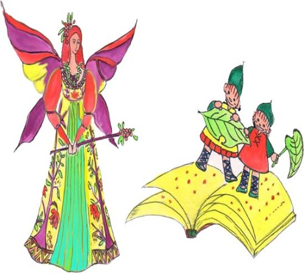

仙女的新年禮物 作者愛蜜爾.波爾森 江銘輝譯
二個小孩子在玩耍，一天，有一個仙女突然出現在他們前面，她說：「我我要送給你們新年禮物。」說著，便給每位小朋友一人一包禮物，就瞬間不見了。
卡爾和菲利浦將包裹打開，發現裡面是二本美麗的書，每一頁都像剛從天空飄落的雪花一樣的白淨純潔。
又過了好幾個月，仙女又出現在孩子們的前面，「我又另外帶來兩本書送給你們。」她說，「但是我要將第一次送給你們的書本帶回去還給送你們的光陰之父。」
「我能不能再保留它一些時候？」菲利浦問，「我近來幾乎沒有想到它，我想打開在最後一頁畫上一些東西。」天使說:「不行，我必須照它原來的樣子拿走。」
卡爾說:「我想能將我將書本再看一遍，以前，我每次只能看一頁，因為每頁一翻過便黏著緊緊地，同時每天我無法翻開超過一頁。」
仙女說：「好吧！卡爾你可以再看你的書，菲利浦也看他的書。」說著，她為他們二人點燃兩盞小銀燈。當仙女翻動書本時，二位小朋友藉著小銀燈的燈光看書上各頁的內容。

圖：仙女每年送給小朋友一本潔白新書，小朋友只要表現良好，年底時該書就會畫上美麗的圖案。
觀看時，小朋友們感到非常疑惑，這會是一年前仙女剛送出的同一本書嗎？它們原先是清潔、白淨的，純潔和美麗像天空剛飄下的雪花一樣。其中有一頁還特別難看，上面滿是污點和潦草的字和圖畫，下一頁則是一幅美麗的小圖案。有幾頁，頁邊加上金色、銀色和綺麗的彩色的圖案，和其它美麗的花朵，還有幾頁，繪著一道非常漂亮、柔和的彩虹。可是即使是最美麗的書頁上，仍然有少許污點和潦草圖案。
看完後，卡爾和菲利浦望著仙女。一齊說：「誰把這些加在書本上？記得當初我們翻開的時候，每頁都是白白、乾乾淨淨的，但是現在整本書卻沒有一個地方是空白的。」
仙女笑著對二個小孩說：「好吧，讓我向你們解釋這些圖畫的意義吧！」
「菲利浦你看，這一頁，上面畫著盛開的玫瑰花，是說你曾經將心愛的玩具給了小朋友；這隻美麗的小鳥，看起來好像在盡情地歡唱，意思是說你在前幾天下定決心，不再和人爭吵，並且努力做到仁愛，友善。」
菲利浦問，「可是，為什麼繪上這個污點呢？」
「這！」仙女歎息說：「那一個是你有一天撒謊，這一個是說你沒有聽媽媽的話。包括卡爾在內，你們書上所有的污點和潦草的圖案，都是代表你們不好的行為。當你們表現優良時，就會在你們書上畫上一幅美麗的圖案。」
卡爾和菲利浦同聲說：「呵！但願我們能重新擁有這本書。」
仙女說：「那是不可能的，看！今年已過去，它們都已被記上日期，現在，只能把它們歸放在『光陰之父』的書架上，然而，我每年會再帶給你們每人一本新書。希望你們使書本描繪出較往年更美麗的圖案。
說完，仙女便不見了，留下兩位小朋友，每人手中各一本新書，第一頁是潔白的。同時在書的背面用金字寫著：「新年快樂！」
The Fairy's New Year Gift By Emilie Poulsson（原文）
Two little boys were at play one day when a Fairy suddenly appeared before them and said, "I have been sent to give you New Year presents."
She handed to each child a package, and in an instant was gone.
Carl and Philip opened the packages and found in them two beautiful books, with pages as pure and white as the snow when it first falls.
Many months passed and the Fairy came again to the boys. "I have brought you each another book?" said she, "and will take the first ones back to Father Time who sent them to you."
"May I not keep mine a little longer?" asked Philip. "I have hardly thought about it lately. I'd like to paint something on the last leaf that lies open."
"No," said the Fairy; "I must take it just as it is."
"I wish that I could look through mine just once," said Carl; "I have only seen one page at a time, for when the leaf turns over it sticks fast, and I can never open the book at more than one place each day."
"You shall look at your book," said the Fairy, "and Philip, at his." And she lit for them two little silver lamps, by the light of which they saw the pages as she turned them.
The boys looked in wonder. Could it be that these were the same fair books she had given them a year ago? Where were the clean, white pages, as pure and beautiful as the snow when it first falls? Here was a page with ugly, black spots and scratches upon it; while the very next page showed a lovely little picture. Some pages were decorated with gold and silver and gorgeous colors, others with beautiful flowers, and still others with a rainbow of softest, most delicate brightness. Yet even on the most beautiful of the pages there were ugly blots and scratches.
Carl and Philip looked up at the Fairy at last.
"Who did this?" they asked. "Every page was white and fair as we opened to it; yet now there is not a single blank place in the whole book!"
"Shall I explain some of the pictures to you?" said the Fairy, smiling at the two little boys.
"See, Philip, the spray of roses blossomed on this page when you let the baby have your playthings; and this pretty bird, that looks as if it were singing with all its might, would never have been on this page if you had not tried to be kind and pleasant the other day, instead of quarreling."
"But what makes this blot?" asked Philip.
"That," said the Fairy sadly; "that came when you told an untruth one day, and this when you did not mind mamma. All these blots and scratches that look so ugly, both in your book and in Carl's, were made when you were naughty. Each pretty thing in your books came on its page when you were good."
"Oh, if we could only have the books again!" said Carl and Philip.
"That cannot be," said the Fairy. "See! they are dated for this year, and they must now go back into Father Time's bookcase, but I have brought you each a new one. Perhaps you can make these more beautiful than the others."
So saying, she vanished, and the boys were left alone, but each held in his hand a new book open at the first page.
And on the back of this book was written in letters of gold, "For the New Year."